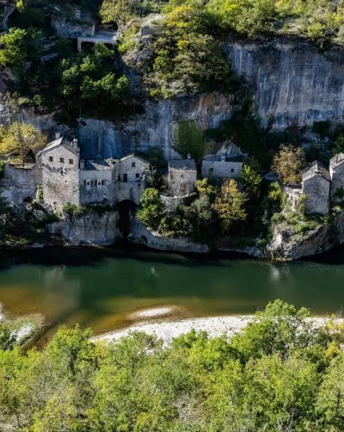
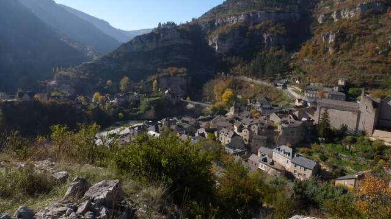

Fondé dès l’époque gallo-romaine sous le nom de Burlatis, le site occupe un méandre spectaculaire des gorges du Tarn, encadré par le causse Méjean et le causse de Sauveterre. Le haut Moyen Âge voit l’arrivée d’une princesse mérovingienne, Enimie, sœur du roi Dagobert selon la tradition : atteinte de lèpre, elle aurait obtenu sa guérison en se baignant dans la source de Burle, au pied du village, avant d’y fonder un monastère en signe de reconnaissance.

Sainte-Enimie, accroché au flanc du canyon au-dessus du Tarn
Le bourg médiéval prend véritablement son essor en 951, lorsque l’évêque de Mende Étienne restaure le monastère bénédictin, dont subsistent aujourd’hui une chapelle et une salle capitulaire. Autour de l’abbaye se développent des ruelles pavées de galets du Tarn, des escaliers taillés dans le roc et des maisons de calcaire aux toits de lauzes, formant un dédale médiéval remarquablement conservé. À la Révolution, les moines quittent les lieux et le village est un temps rebaptisé Puy-Roc, avant que les habitants ne lui rendent son nom.
L’ouverture de la route des gorges en 1905 désenclave la région et marque le début du tourisme. Aujourd’hui intégré à la commune nouvelle de Gorges du Tarn Causses depuis 2017, Sainte-Enimie demeure le carrefour incontournable des gorges, classé parmi « Les Plus Beaux Villages de France » et distingué Village préféré des Français en 2014.
🏞️
Visite pratique

Le village étagé sur le flanc du canyon, au-dessus du Tarn
⏱️
Durée
Environ 1h30 à 2h de visite, davantage avec la randonnée vers l’Ermitage
📊
Difficulté
Modérée à soutenue, ruelles et escaliers en pente, dénivelé marqué vers l’Ermitage de la Roche
🚗
Accès
Cœur des gorges du Tarn, entre causse Méjean et causse de Sauveterre, D907bis
🎟️
Tarif
Village en accès libre, visites guidées et musée payants
✦ Infos pratiques
Source de Burle Résurgence karstique légendaire au pied du village, point de départ de la légende d’Enimie
Ermitage de la Roche Chapelle troglodytique accessible par un chemin de croix, belvédère sur le village
Ancien monastère Chapelle et salle capitulaire du XIIe siècle, vestiges du prieuré bénédictin
Pont sur le Tarn Ouvrage du XVIIe siècle enjambant la rivière au cœur du village
Halle et mesure à grains Témoins de l’activité marchande médiévale du bourg
Musée des Vautours & du Tarn Exposition sur la faune et le patrimoine des gorges
Descente en canoë-kayak Départ classique pour explorer les gorges du Tarn en pagayant
Festival Bulles de Burle Festival de bande dessinée, premier week-end de juillet
1
La source de Burle
Résurgence vauclusienne aux pieds du village, associée à la guérison miraculeuse de la princesse Enimie ; un lieu de fraîcheur apprécié été comme hiver.
2
Les ruelles et escaliers de galets
Passages voûtés, maisons de calcaire et escaliers taillés dans la roche composent un labyrinthe médiéval qui grimpe depuis le Tarn jusqu’aux hauteurs du bourg.
3
L’ancien monastère bénédictin
Chapelle et salle capitulaire du prieuré fondé au VIIe siècle et restauré en 951, aujourd’hui intégrées au collège du village.
4
L’Ermitage de la Roche
Chemin de croix menant à la grotte où la princesse Enimie aurait terminé ses jours, offrant un panorama sur le méandre du Tarn.
5
Le pont du XVIIe siècle
Franchissement historique du Tarn, point de vue privilégié sur les façades étagées du village et le canyon.
🏆
Reconnaissance & patrimoine
🏅
Plus Beaux Villages de France
Sainte-Enimie est labellisée parmi « Les Plus Beaux Villages de France » pour son patrimoine médiéval exceptionnellement conservé au cœur des gorges du Tarn.
⭐ Label PBVF
🏆
Village préféré des Français
En 2014, Sainte-Enimie s’est classée 18e sur 22 villages finalistes de l’émission « Le Village préféré des Français ».
🏞️
Grand Site de France
Le village se situe au cœur du Grand Site de France des gorges du Tarn, de la Jonte et des Causses, l’un des plus vastes de France.
🌍
Réserve de biosphère & Parc national des Cévennes
Sainte-Enimie s’inscrit dans la zone centrale de la Réserve de biosphère des Cévennes (UNESCO) et adhère au Parc national des Cévennes depuis 1970.
UNESCO
💧
La légende d’Enimie et la source miraculeuse de Burle
La légende raconte qu’Enimie, princesse mérovingienne réputée pour sa beauté et sœur du roi Dagobert, refusa le mariage que son père voulait lui imposer. Pour échapper à cette union, elle implora Dieu de la délivrer de sa beauté : sa prière fut exaucée par une terrible lèpre qui la défigura et l’isola.
Un ange lui ordonna d’aller se baigner en Gévaudan, dans la fontaine de Burle. La princesse s’y glissa et son mal disparut aussitôt.
— Tradition locale de la légende d’Enimie
Mais chaque fois qu’Enimie reprenait le chemin du retour vers la cour, la lèpre réapparaissait. Comprenant que Dieu l’appelait à demeurer en ce lieu, elle s’installa à Burlatis et entreprit d’évangéliser la région, fondant le monastère qui donna naissance au village actuel. Elle aurait fini ses jours recluse dans une grotte surplombant le bourg, aujourd’hui appelée l’Ermitage de la Roche, et se serait mesurée au Drac, créature maléfique associée aux eaux du Tarn selon les récits locaux. Une dérivation de la source de Burle coule encore aujourd’hui près de l’autel de l’ermitage, où l’on venait autrefois baigner les enfants souffrant de maladies de peau.
💬
Le saviez-vous ? Anecdotes énimiennes
👑
Une princesse devenue sainte
Fille du roi Clotaire II selon la tradition, Enimie fut canonisée par l’Église catholique ; son culte est toujours vivace dans les gorges du Tarn.
🏘️
Un nom effacé puis retrouvé
À la Révolution, le village fut un temps rebaptisé Puy-Roc après le départ des moines, avant que les habitants ne lui rendent son nom d’origine.
🛶
Point de départ des gorges
Sainte-Enimie est aujourd’hui l’un des principaux points de mise à l’eau pour les descentes en canoë-kayak des gorges du Tarn.
📖
Une BD à l’honneur
Chaque premier week-end de juillet, le festival « Bulles de Burle » réunit dessinateurs et amateurs de bande dessinée dans les ruelles du village.
📍
Aux alentours
La Malène village de bateliers à quelques kilomètres en aval, point de départ des barques dans les Détroits du Tarn.
Castelbouc hameau troglodytique dominé par les ruines d’un château perché, accessible à pied depuis les gorges.
Le Point Sublime l’un des plus célèbres belvédères sur le Tarn, offrant une vue plongeante sur le Cirque des Baumes.
Causse de Sauveterre et causse Méjean vastes plateaux calcaires ponctués de burons et de dolmens, terrain de randonnée et d’observation des vautours.
Florac sous-préfecture de la Lozère et siège du Parc national des Cévennes, à une vingtaine de kilomètres.
Grotte de l’Aven Armand cavité exceptionnelle du causse Méjean, célèbre pour sa « forêt vierge » de stalagmites.